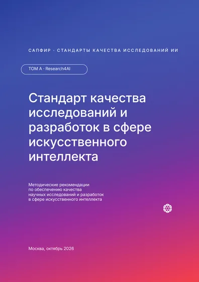
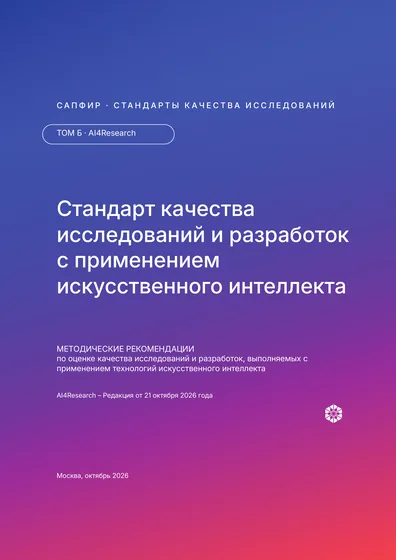
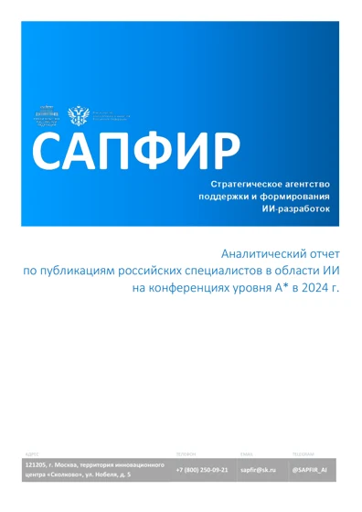
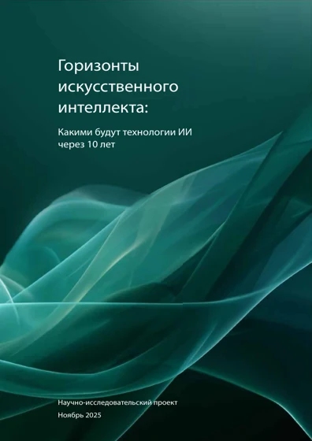

ИИ, цифровые технологии и наука
Исследовательские программы, научная аналитика и финансирование разработок.
Более 10 лет работаю на стыке науки, технологий и государственного управления. Запускаю организации, формирую команды и организую совместную работу государства, исследователей и бизнеса.
Исследовательские программы, научная аналитика и финансирование разработок.
Научно-образовательные кампусы, мастер-планы и инфраструктура.
Федеральные проекты, технологические дорожные карты и взаимодействие с государством.
Участвовал в создании проектного офиса. Сформировал команду из 23 человек и организовал выполнение программы из 80 задач. Бюджет в 2025 году — 150 млн рублей.
Совместно со Сбером организовал исследование с участием свыше 270 учёных из 36 стран. Итоги представлены на AI Journey 2025 вместе с вице-премьером Дмитрием Чернышенко, а приоритетное использование результатов включено в поручения Президента РФ.
Источники: поручения Президента · сайт Правительства
Организовал разработку и защиту мастер-плана научно-образовательной территории на 700 га. Согласовал решения с Росатомом, правительством субъекта РФ и городом. По мастер-плану идёт строительство.
Координировал разработку семи дорожных карт, принятых и переданных государству. Готовил предложения по финансированию: за период работы на цифровые разработки Росатома привлечено свыше 20 млрд рублей.
Исполнительный директор
Заместитель директора по развитию
Руководитель проектного офиса «Цифровая экономика»
И. о. заместителя директора департамента бюджетной политики в отраслях экономики
Специалист департамента ИТ и управления жизненным циклом изделий
Associate

Методические рекомендации по обеспечению качества научных исследований и разработок в сфере искусственного интеллекта.
Открыть том
Методические рекомендации по оценке качества исследований и разработок, выполняемых с применением технологий искусственного интеллекта.
Открыть том
Анализ публикационной активности российских специалистов на ведущих международных научных конференциях.
Открыть отчёт
Международный научный форсайт: перспективы развития технологий ИИ на десять лет. Русская версия.
Открыть форсайт